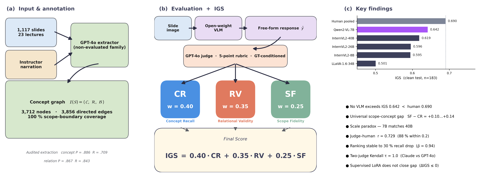

Overview
Vision–language models (VLMs) are increasingly used to explain lecture slides, but existing benchmarks check whether a model's description is visually or semantically correct, not whether it recovers what the slide was designed to teach. MIP-BENCH measures instructional grounding: whether a VLM recovers the instructional intent of a slide, meaning its target concepts, how those concepts relate, and where the slide's scope ends.
The benchmark contains 1,117 slides from 23 medical imaging lectures spanning 15 scientific domains. Each slide is paired with a structured concept graph derived from the slide and the instructor's narration.
🏗️ Benchmark Design

Figure 1: (a) Slides and instructor narration are converted into concept graphs; (b) VLM responses are scored with the Instructional Grounding Score; (c) headline results.
Each slide S is annotated with an instructional-intent triple:
I(S) = <C, R, B> C = target concepts the slide is designed to teach R = directed relational links among concepts B = scope boundary (what the slide covers and does not cover)
📐 Instructional Grounding Score (IGS)
Model responses are scored against the fixed ground-truth triple, not rated free-form:
IGS = 0.40 · CR + 0.35 · RV + 0.25 · SF
- Concept Recall (CR): are the target concepts explicitly recovered?
- Relational Validity (RV): are the relationships between concepts stated correctly?
- Scope Fidelity (SF): does the response stay within the slide's instructional boundary?
🔍 Metric validation
- Against a structurally independent graph-based metric: r = 0.41–0.54.
- Against pooled human ratings from three annotators: r = 0.729 on overall IGS, with 88% of slides within 0.2.
- Against a second LLM judge from a different provider: per-model r ∈ [0.694, 0.835] and identical model ordering (Kendall τ = 1.0).
📊 Results
| Model | IGS | CR | RV | SF | SF − CR |
|---|---|---|---|---|---|
| Qwen2-VL-7B | 0.642 | 0.633 | 0.563 | 0.768 | +0.134 |
| InternVL2-40B | 0.619 | 0.615 | 0.537 | 0.740 | +0.126 |
| InternVL2-26B | 0.596 | 0.597 | 0.521 | 0.699 | +0.103 |
| InternVL2-8B | 0.595 | 0.592 | 0.525 | 0.699 | +0.107 |
| LLaVA-1.6-34B | 0.501 | 0.492 | 0.421 | 0.629 | +0.137 |
| Human (pooled, n = 3) | 0.690 | 0.717 | 0.644 | 0.711 | −0.006 |
Clean test split (n = 183 slides for models, 50 slides for the human study).
- No VLM reaches human-level grounding: the best model scores IGS = 0.642 against a pooled human IGS of 0.690.
- A consistent scope–concept gap: all five VLMs score higher on Scope Fidelity than on Concept Recall (+0.10 to +0.14). They identify the topic of a slide without explicitly grounding its concepts. Human annotators show no such gap (−0.006).
- Scale does not buy grounding: the 7B model matches or beats the 40B model.
🚀 Key Contributions
- A benchmark for instructional intent, not just visual or semantic correctness, in medical imaging lectures.
- The Instructional Grounding Score, validated against a graph-based metric, a second LLM judge, and human ratings.
- A curriculum knowledge graph with 3,712 concept nodes and 12,419 co-occurrence edges.
- Public release of benchmark splits, annotations, model outputs, and evaluation protocols on GitHub and Hugging Face.
📝 Citation
@unpublished{islam2026mipbench,
title = {MIP-BENCH: A Benchmark for Instructional Grounding in Medical Imaging Presentations},
author = {Islam, Md Zabirul and others},
note = {Manuscript in preparation},
year = {2026}
}